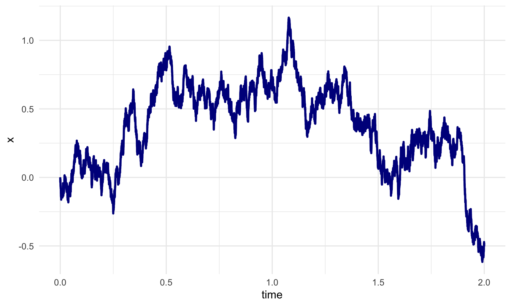
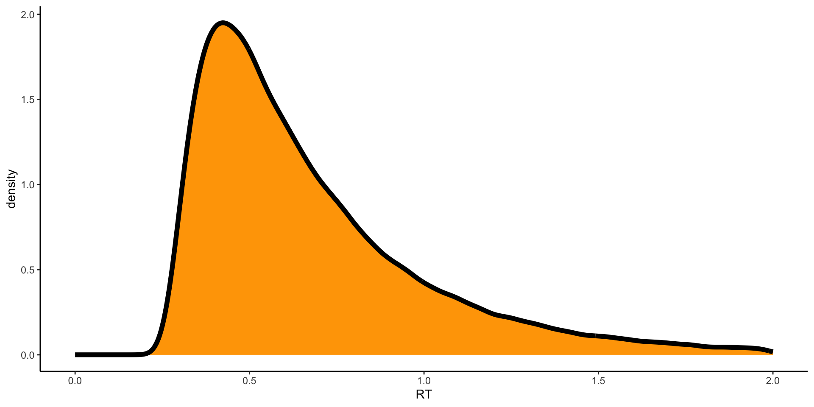

Intro to EAM
Margherita Calderan
August 24, 2025
Decision Making
- Many decisions are made rapidly and at a low cognitive level.
- Perception triggers stored knowledge → triggers action.
- This process matches perception to known representations and selects a response.
Sequential Sampling Models
Many EAMs are sequential sampling models that assume accumulation of noisy evidence toward thresholds.
They differ on key dimensions:
- Number of accumulators (e.g., single vs multiple)
- Decision rules (relative vs absolute)
- Drift rate: constant or time-varying
- Noise: stochastic vs deterministic
- With or without inhibition or decay
All Evidence Accumulation Models
EAMs assume that, upon stimulus presentation (e.g., left- or right-facing arrow), the decision maker:
- Samples noisy evidence for available options (e.g., “Should I press left or right?”)
- Accumulates that evidence until a threshold is crossed
Sequential Processing Assumption
Total Response Time (RT) is modeled as the sum of three sequential stages:
- Stimulus encoding
- Evidence accumulation (decision-making)
- Motor response execution
Stages (1) and (3) are captured in the nondecision time (Ter) parameter.
Relative vs. Absolute

Boag, R. J., Innes, R. J., Stevenson, N., Bahg, G., Busemeyer, J. R., Cox, G. E., … Forstmann, B. (2024, July 2). An expert guide to planning experimental tasks for evidence accumulation modelling. https://doi.org/10.31234/osf.io/snqgp
Relative Evidence Models
In relative evidence models (e.g., Wiener process, Diffusion Decision Model):
- Decision is based on the difference in accumulated evidence between two options.
- Suitable for binary choices.
Absolute Evidence Models
In racing accumulator models (e.g., LBA, RDM):
- Each option has its own accumulator tracking absolute evidence.
- Decision is made by the first accumulator to reach threshold.
- Can handle multiple alternatives (not just binary choices).
Wiener Process
The Wiener process (Brownian motion) is the foundation of many decision models. It models the accumulation of evidence as a noisy process:
- : accumulated evidence at time
- z: starting point
- v: drift rate (signal strength)
- s: noise (standard deviation of the increments)
- : standard Wiener process (Gaussian increments)
Wiener First Passage Time (FPT)
It is the expected distribution of the time until the process first hits or crosses one or the other boundary. This results in a bivariate distribution, over responses and hitting times .
Full Diffusion Decision Model
The Full DDM accounts for more behavioral phenomena by allowing trial-to-trial variability in key parameters:
Drift rate:
Starting point:
Non-decision time:
Full DDM Parameters
a: decision boundary
z: starting point
v: drift rate
t_0: non-decision time
s: noise scale (usually fixed)
: SD of drift rate across trials
: variability in start point
: variability in non-decision time
Boehm, U., Annis, J., Frank, … & Wagenmakers, E. J. (2018). Estimating across-trial variability parameters of the Diffusion Decision Model: Expert advice and recommendations. Journal of Mathematical Psychology, 87, 46-75. Ratcliff, R., & Rouder, J. N. (1998). Modeling Response Times for Two-Choice Decisions. Psychological Science, 9(5), 347-356.
Purpose of Variability
Adding variability improves the model’s ability to:
- Capture error RT differences
- Reflect trial-to-trial attention or difficulty changes
However, it increases computational demands.
Racing Diffusion Model
Instead of a single process choosing between boundaries, the Racing Diffusion Model (RDM) uses multiple independent diffusion processes, one per option:
Each accumulator races toward its threshold. The first to cross wins.
RDM
The winner is the first process to reach threshold:
Summary
| Model | Core Mechanism | Key Strengths |
|---|---|---|
| Wiener | Stochastic accumulation | Simple FPT, binary outcomes |
| Full DDM | Accumulation + param variability | Realistic RTs, error patterns |
| Racing DDM | Multiple accumulators | Handles multi-alternative decisions |
Evidence accumulates noisily over time until a decision threshold is reached.
Core Assumptions of the Basic EAM
Each decision = a single, continuous accumulation of evidence
Culminates in a discrete response
Evidence accumulates from stimulus onset to response
EAM-suitable tasks should
Clearly define stimulus and response onset
Present static, constant stimuli
Avoid overlapping cognitive processes
Within-Trial Stationarity
- Model parameters are fixed within a trial
- Evidence accumulation:
- Constant mean rate, though noisy
- No changes in stimulus evidence mid-trial
- Decision thresholds:
- Set before stimulus onset
- Do not change during the trial
Within-Condition Stationarity
- Parameters are constant across same-type trials
- Needed for model fitting and averaging
- Assumes:
- Trials of same condition reflect same cognitive settings
- Participant behavior is stable
Example: Don’t change stimulus brightness mid-trial.
Positively Skewed RT Distributions
EAMs naturally produce positively skewed RTs.
Free of Contaminant Processes
Data should reflect evidence accumulation!
Avoid:
Random guessing
Fast guesses
Attention lapses or missing responses
Clean data = better model fit and interpretability.
Latent Cognitive Parameters
EAMs decompose decisions into:
Drift rate (v)
Threshold (a)
Bias (z)
Nondecision time (Ter)
Use of Parameters
Compare parameters:
Across individuals (e.g., young vs. older adults)
Within individuals (e.g., easy vs. hard conditions)
With covariates (e.g., BOLD activity, IQ)
Stimulus Design
Manipulate difficulty to modulate:
Drift rate
Error rates (target: 5–35%)
Avoid:
Floor effects → guessing
Ceiling effects → no errors to fit
Response Modality
EAMs assume the response begins after the decision ends.
Best modalities:
Manual keypresses
Saccades
Avoid imprecise, slow, or delayed responses.
Drift Rate (v)
Reflects evidence strength
⬆ Drift → fast & accurate decisions
⬇ Drift → slow, error-prone
Manipulated by:
Stimulus discriminability
Attention/task difficulty
Thresholds (a)
Set before stimulus onset
Reflect response caution/cognitive control/bias/preference
⬆ Threshold:
- Slower but more accurate
⬇ Threshold:
- Faster but error-prone
Manipulate via pre-trial cues or instructions.
Starting Point (z)
Reflects response bias
Midpoint = no bias
Deviating from midpoint:
- Favors one response:
- Faster/more accurate for favored
- Slower/less accurate for disfavored
Set before stimulus onset.
Nondecision Time (Ter)
Time to encode stimulus + execute response
Shifts RT distribution without changing shape/accuracy
Sensitive to:
Visual complexity
Motor demands
Hard to estimate precisely — often noisy across individuals.
Trial Structure and Event Timing
EAM tasks follow a structured sequence of events:
Cue (optional)
Fixation
Stimulus onset
Response window
Intertrial interval
Each component affects the integrity of evidence accumulation.
Cue
- Optional cue presented before stimulus onset.
- Informs participants how to respond (e.g., emphasis on speed or accuracy).
- May set cognitive control parameters:
- Thresholds
- Biases
- Can direct gaze or attention to a spatial location.
Must occur before evidence accumulation begins.
Fixation Interval
- Ensures eyes and attention are centered.
- Allows previous trial’s processes to return to baseline.
- Reduces overlap across trials.
üí° Best practice: Use variable durations, e.g.:
Sample from exponential or pseudo-exponential distribution
Mean ≈ 0.7 s; range = 0.2–5 s
Stimulus Onset
- Marks the start of evidence accumulation.
- Assumes constant signal strength from onset to response.
Any variability or delay in onset weakens the assumption of continuous accumulation.
Response Window
- Starts with stimulus onset.
- Ends with:
- A response
- Or a deadline
üí° Calibrate response window:
Long enough to allow natural responding
Short enough to avoid strategy shifts
Typical EAM use: mean RT < 1.5 s
But… EAMs Can Handle Longer RTs
- Lerche & Voss (2019): Simulated fits with mean RT ≈ 7.4 s
- Aschenbrenner et al. (2016); Glickman & Usher (2019): Empirical fits to long RTs
- Boag et al. (2023): EAMs used in:
- Air-traffic control
- Maritime surveillance
- Forensic decision making
ü߆ Effects on parameters were consistent across short/long RT tasks.
Intertrial Interval
- Time between trials
- Purpose:
- Allow participant to reset
- Prevent proactive interference
- Avoid sequential effects
Sample Size Planning
- Critical for parameter recovery and error trials
- Key question:
- Will you have enough rare trial types (e.g., errors on easy trials)?
Example:
200 trials × 5% error rate = 10 error trials — often the minimum for fitting.
Collecting Data
EAM modeling requires detailed per-trial data:
Each trial (row) should include:
Participant ID
Condition
Stimulus presented
Response submitted
RT
Optional but recommended: - Session/trial number
- Event timings: cue, stimulus, response, feedback, intertrial interval
üíæ Stored as .csv or similar ‚Äî allows model software to reconstruct the timeline.
Outliers
Outliers distort model fits.
Fast outliers:
- May reflect:
- Premature guesses
- Trigger failures
- Typically: RT < 150–300 ms (depending on response modality)
Slow outliers:
Less common to censor unless clearly implausible
May reflect:
- Lapses
- Multiple evidence accumulation attempts
Identifying Fast Guessing
A principled method:
Sort RTs from fastest to slowest
Plot accuracy as a function of RT
Find the “chance-performance boundary”
Discard all RTs below that point
Better than arbitrary 200–300 ms cutoff
Detecting Nonstationarity
Check for drift across trials:
Correlate RT with trial number
Look for trends suggesting:
- Fatigue
- Learning
- Strategic shifts
Use this to:
Exclude sessions
Model time-on-task effects
“All Models Are Wrong, but Some Are Useful” — G. Box
Promotes understanding of behavior
ü™í Occam‚Äôs Razor: Avoid unnecessary complexity
Accurately predicts new (out-of-sample) data
üìè Captures uncertainty, variability, and structure